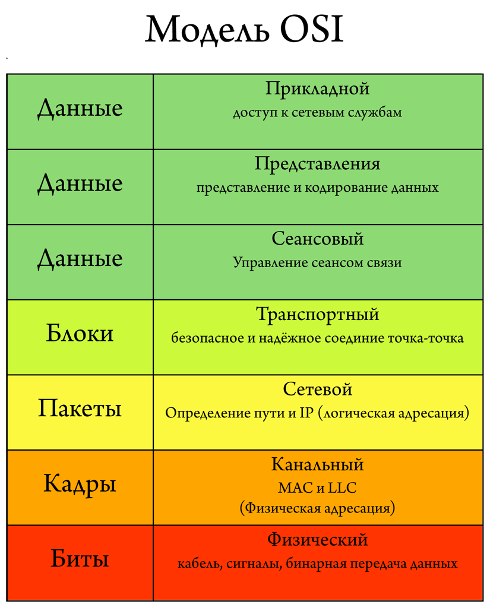
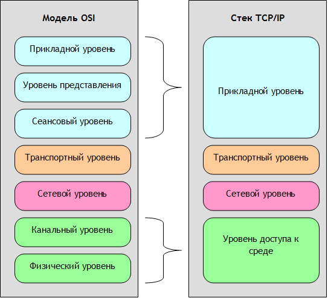
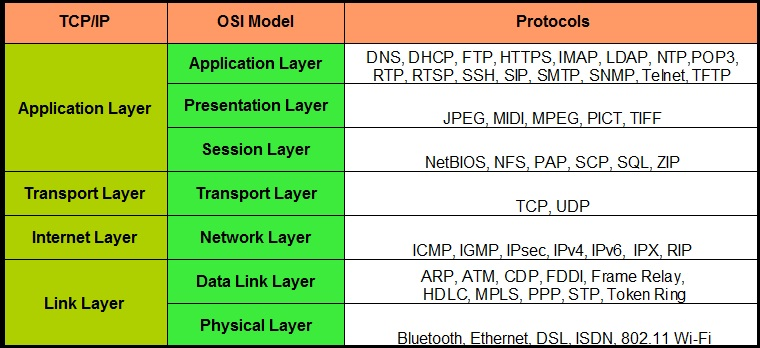

Lecture 5
Network
Содержание
- модель OSI
- модель TCP/IP
- Berkley Socket
- протокол HTTP
Модель OSI
В 1984 году состоялся релиз сетевой модели OSI (Open Systems Interconnection model), цель которой была стандартизация сетевого взаимодействия в компьютерных системах.
В настоящее время модель OSI практически не используется. В основном модель применяется только в качестве обучения сетям.
Модель OSI
Физический уровень
Определяет метод передачи данных во внешней физической среде: передача электрических сигналов, радиоканала и пр.
Единицей данных являются биты.
Канальный уровень
Берет на себя задачу адресации в пределах локальной сети, обнаруживает ошибки, проверяет целостность данных, которые были переданы по физической среде.
Единицей данных являются кадры.
Сетевой уровень
Каждое сетевое устройство должно иметь уникальный сетевой адрес в рамках одной сети.
Сетевой же уровень отвечает за объединение участков сети и маршрутизацию - выбор пути данных от отправителя получателю.
Единицей данных являются пакеты.
Протоколы сетевого уровня
Самые яркие представители протоколов сетевого уровня - это IPv4 и IPv6.
IPv4
Адрес в IPv4 представлен 32 битным числом.
Часто их представляют в виде 4 чисел через точку. Например, 192.168.0.1
Адрес 127.0.0.1 - локальный IPv4-адрес.
IPv6
Адрес в IPv6 представлен 128 битным числом.
Например, 2001:0db8:11a3:09d7:1f34:8a2e:07a0:765d
Адрес ::1 - локальный IPv6-адрес.
Транспортный уровень
Отвечает за взаимодействие между отдельными процессами разных узлов сети.
Адресом этого уровня служат, так называемые порты, которые нужны для указания конкретной службы, которая отправляет или получает данные.
Порты транспортного уровня
Пара сетевого адреса и порта транспортного уровня определяет конечную точку сетевого вазимодействия.
Порты
- 0-1023 – хороши известные службы.
- 21 – SSH
- 80 – HTTP
- 443 – HTTPS
- 1024-49151 – зарегистрированные IANA
- 49152-65535 – любые цели
Протоколы транспортного уровня
Самые яркие представители протоколов сетевого уровня – это UPD и TCP.
TCP
TCP – протокол c установлением соединения.
- согласование параметров соединения
- проверка корректности получаемых данных
- повторный запрос данных в случае некорректного получения
Применение TCP
Протокол TCP применяется в системах, где безоошибочность данных важнее, даже если приходится жертвовать скоростью.
Например, текстовые чаты, web-данные, передача файлов и пр.
UDP
UDP – протокол без установления соединения.
- проверяется только контрольная сумма входящего пакета
- при избытке пакетов в очереди пакеты отбрасываются
- получатель никак не управляет входящим потоком данных
Применение UDP
Протокол UDP применяется в системах, где скорость важнее надежности. Например, в передаче голоса или видеопотока.
Кроме этого, UDP применяют для создания протоколов, которые предназначены скрестить скорость UDP и надежность TCP.
Сеансовый уровень
…
Уровень представления
…
Прикладной уровень
На этом уроне работают конечные приложения: e-mail, браузеры, игры и пр.
Протоколы прикладного уровня: HTTP, FTP, DNS, Telnet, SSH…
Модель TCP/IP
Модель TCP/IP
Сокеты Беркли
Для работы с сетью традиционно используются сокеты.
Сокет – это абстракция, которая позволяет работать с сетевыми ресурсами, как с файлами. Мы можем писать и читать данные из сокета почти так же, как из обычного файла.
Функции для работы с сокетами
- socket
- bind
- listen
- accept
- connect
- recv, recvfrom, recvmsg
- send, sendto, sendmsg
- close
Функция socket
Функция socket - создает новый сокет с заданными параметрами.
int socket(int domain, int type, int protocol);
int sock_udp = socket(AF_INET,
SOCK_DGRAM, IPPROTO_UDP);
int sock_tcp = socket(AF_INET,SOCK_STREAM, IPPROTO_TCP);
Функция bind
Функция bind - связывает сокет с конкретным адресом сетевого интерфейса.
int bind(int sockfd,
const struct sockaddr *addr,
socklen_t addrlen);
Функция listen
Функция listen - переводит сокет в пассивный режим.
int listen(int sockfd, int backlog);
Функция listen
Функция listen принимает дескриптор слушающего сокета и размер очереди запросов. Когда клиент пытается соединиться с сервером, его запрос ставится в очередь, так как сервер может быть занят обработкой других запросов. Если очередь заполнена, все последующие запросы будут игнорироваться.
Функция accept
Функция accept ожидает клиентские соединения.
int accept(int sockfd,
struct sockaddr *addr,
socklen_t *addrlen);
Функция accept является блокирующей.
Функция accept
В качестве аргумента функции передается дескриптор слушающего сокета.
При успешной установке соединения, для него создается новый сокет. Функция accept возвращает дескриптор этого сокета.
Если произошла ошибка соединения, то возвращается значение INVALID_SOCKET.
Функция accept
В структуру, на которую ссылается addr, записывается адрес сокета клиента, который установил соединение с сервером.
В переменную, адресуемую указателем addrlen, записывается размер структуры.
Функция connect
Функция connect соединят пользовательский сокет с удаленным сокетом.
int connect(int sockfd,
const struct sockaddr *addr,
socklen_t addrlen);
Эта функция используется на клиентской стороне подключения, т.к. именно клиент является инициатором подключения.

Boost Asio
Boost.Asio - кросс-платформенная С++ библиотека для программирования сетевых приложений и других низкоуровневых программ ввода/вывода.
Подробности работы с данной библиотекой целесообразнее рассматривать на практических примерах и занятиях.
Домашнее задание
- Boost Asio
Список полезных ссылок - Boost.Asio
- Radchuk - Boost.Asio C++ Network Programming Cookbook
- http://habrahabr.ru/post/192284
- John Torjo - Boost.Asio C++ Network Programming
- Boost.Asio - 4. TCP Socket Programming
Список полезных ссылок - сокеты
- https://code-live.ru/post/cpp-http-server-over-sockets/
- http://rsdn.org/article/unix/sockets.xml
- http://www.vr-online.ru/content/s-setevoe-programmirovanie-chast-1-3999
- Камер Д., Стивенс Д. - Сети TCP/IP, том 3. Разработка приложений типа клиент/сервер для Linux/POSIX
Протокол HTTP
HTTP (HyperText Transfer Protocol) – протокол прикладного уровня.
HTTP – текстовый протокол для обмена данными между браузером и веб-сервером (по крайней мере это самый частый пример использования HTTP).
Описание запроса клиента
Первая строка передает метод запроса, идентификатор ресурса (URI) и версию HTTP-протокола.
После перечисляются заголовки запроса – служебные параметры, которые передает клиент серверу.
Опционально, запрос может иметь тело запроса – пользовательские данные.
Пример запроса
POST /index.html HTTP/1.1
Host: example.com
Content-Type: application/x-www-form-urlencoded
some_request_body
Описание ответа сервера
В первой строке передается версия протокола и статус ответа.
Тело ответа, как и у запроса, отделяется от заголовков одной пустой строкой.
Пример ответа
HTTP/1.1 200 OK
Host: example.com
Connection: close
Content-Length: 2
OK